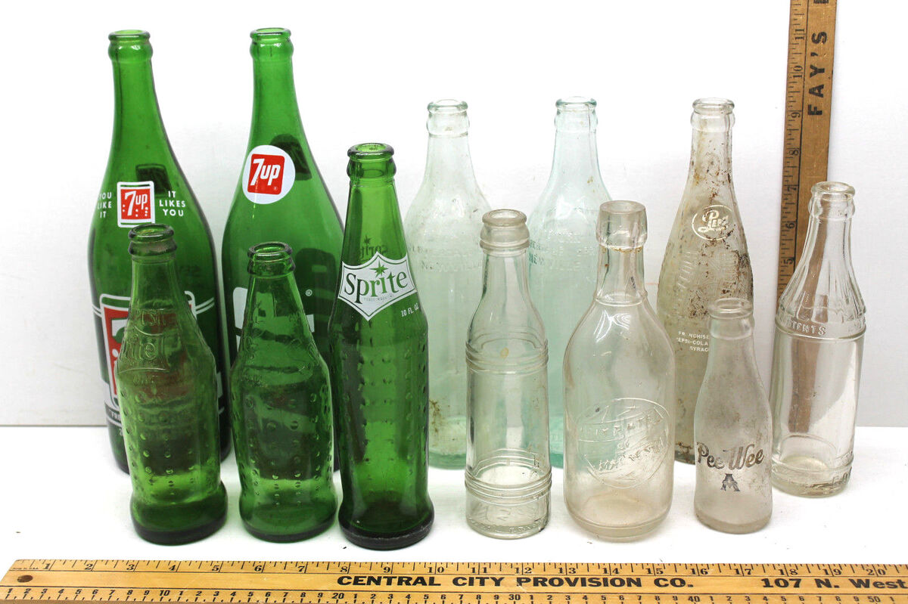

Welcome to A Fizzy History
Discover the fascinating history of soda and soft drinks... Soda has come a long way from its inseption, from tonic water, to medicine and even stimulants! peoples favorate beverages have had such a deep and interesting history!
